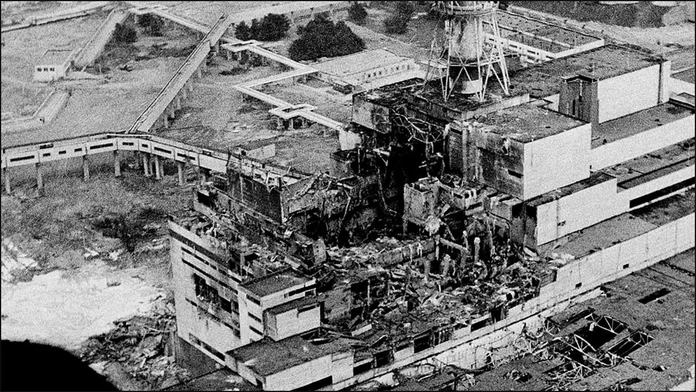
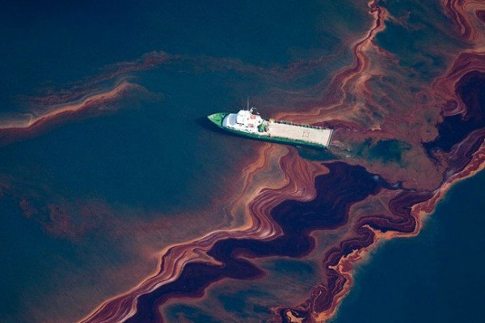
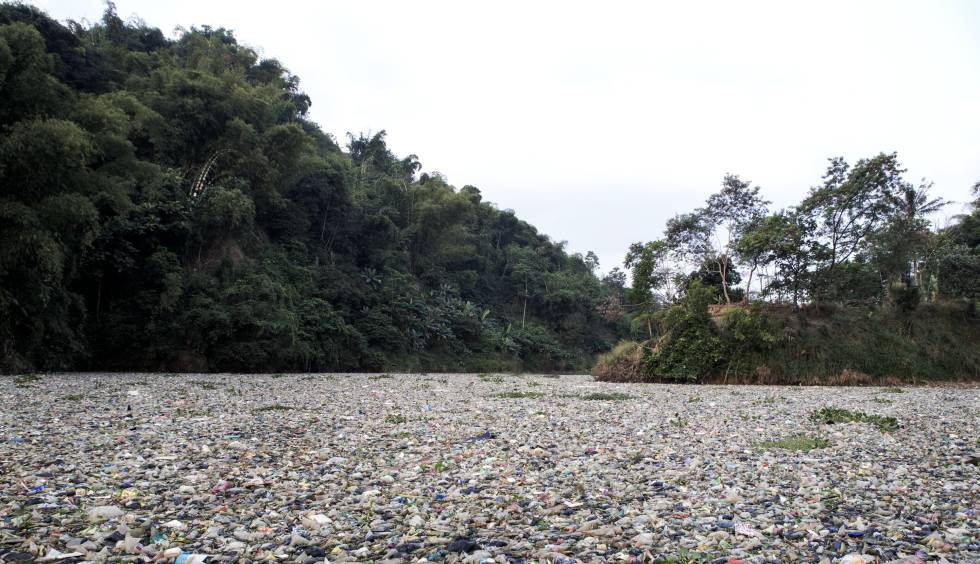

Looking for a change︎ ︎ ︎ ︎ ︎ ︎ ︎ ︎ ︎ ︎ ︎ ︎ ︎ ︎ ︎ ︎ ︎ ︎ ︎ ︎ ︎ ︎ ︎ ︎︎ ︎ ︎ Problemas medioambientales, protección al medio ambiente
Looking for a change︎ ︎ ︎ ︎ ︎ ︎ ︎ ︎ ︎ ︎ ︎ ︎ ︎ ︎ ︎ ︎ ︎ ︎ ︎ ︎ ︎ ︎ ︎ ︎︎ ︎ ︎ Problemas medioambientales, protección al medio ambiente
Casos Impactantes en Nuestra Sociedad sobre el Cambio Climático
Caso 1: El desastre de Chernobyl
El desastre de Chernobyl, ocurrido en 1986 en Ucrania, fue el peor accidente nuclear de la historia. La explosión del reactor liberó una gran cantidad de radiación, causando graves daños ambientales y afectando la salud de las personas que vivían en la zona.
Caso 2: Derrame de petróleo en el Golfo de México
En 2010, se produjo un derrame de petróleo en el Golfo de México debido a la explosión de la plataforma petrolera Deepwater Horizon. Este desastre causó una enorme contaminación marina, afectando la vida marina y los ecosistemas costeros.
Caso 3: Contaminación del río Citarum
El río Citarum en Indonesia ha sido considerado uno de los ríos más contaminados del mundo. La industria textil y otros sectores han vertido desechos tóxicos en el río durante décadas, causando graves problemas ambientales y afectando la salud de las comunidades locales.
Caso 4: Contaminación del aire en Pekín
Pekín, la capital de China, ha enfrentado graves problemas de contaminación del aire debido a la alta concentración de contaminantes atmosféricos, como las emisiones de fábricas y los gases de escape de los vehículos. Esto ha tenido un impacto negativo en la salud de la población y en el medio ambiente.